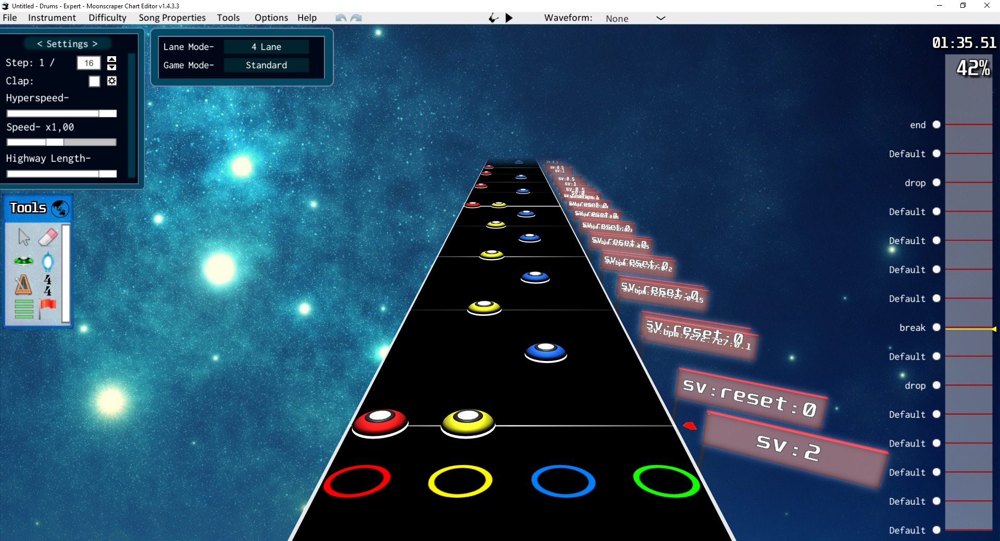

Note: this will only convert "Expert Drums" (4 lanes... for 4K).
You can disregard the above note if you're just converting timing points and you're not charting anything.
Click for timing instructions
You Ctrl+click and drag the timing points. In the video, I put the time signature denominator to like x/16 so the metronome ticks faster.
Time signatures don't actually get converted, so you gotta set those on osu! instead if you want to.
Click for SV instructions

This supports SVs as manually placed local events (the red flag in the left panel) in the following form: sv:0.5 (replace by whichever value)
A value of 0 is replaced by 0.0001 so feel free to put sv:0 events, it's quicker. Values greater than 10 aren't replaced so you're on your own.
However, you can put sv:bpm:727:0.5 (or whichever value) to insert a BPM timing point for SV purposes. The second value is the SV multiplier. Don't forget to reset the BPM to the actual bpm with a sv:resetbpm afterwards.
There's also a sv:reset:0.5 macro that puts a 10000 bpm/10x sv, then resets the BPM and puts the provided value as the SV multiplier exactly 1ms later. Yea, it's a teleport macro.
.chart file
Offset (ms) if necessary
(the offset is usually -23ms just like quaver because osu! treats mp3s differently)
Note²: This doesn't handle SV normalization for variable BPM, use
Agka's SV tools in conjunction to this for that.
(you can conveniently edit the text above, i.e. copy/paste TimingPoints back and forth)